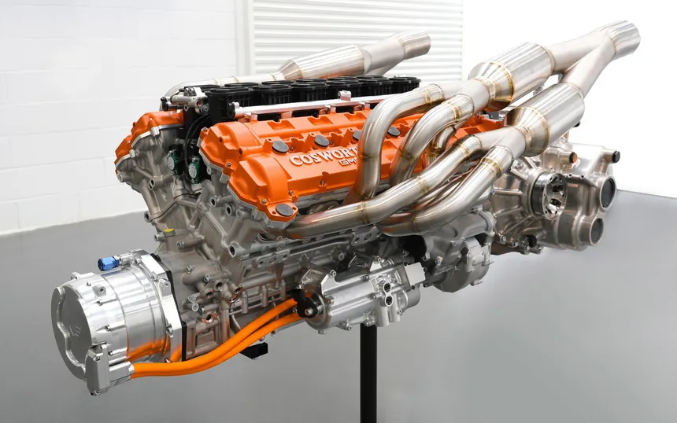

Welcome to Panda CAR Guy! This website is all about two fascinating parts of automotive history: car engines and classic cars.
An engine is one of the most important machines in a traditional car. Its main job is to convert energy from fuel into mechanical motion that can eventually move the wheels.
Most traditional petrol engines use a process called the four-stroke cycle. It happens inside the engine's cylinders.
The intake valve opens and the piston moves down. A mixture of air and fuel enters the cylinder.
The piston moves upward and compresses the air-fuel mixture. Compressing the mixture allows it to release energy more effectively.
The spark plug creates a spark that ignites the compressed mixture. The expanding gases push the piston downward. This produces useful power.
The piston moves upward again while the exhaust valve opens. The burned gases leave the cylinder through the exhaust system.
Piston: Moves up and down inside the cylinder.
Cylinder: The chamber where the piston moves and combustion occurs.
Crankshaft: Converts the piston's up-and-down movement into rotating movement.
Connecting Rod: Connects the piston to the crankshaft.
Spark Plug: Produces the spark that ignites the mixture in a petrol engine.
Valves: Control the flow of air, fuel mixture, and exhaust gases.
Camshaft: Controls when the engine's valves open and close.

Petrol engines use spark plugs to ignite the air-fuel mixture. They are commonly used in passenger cars and performance vehicles.
Diesel engines work differently from petrol engines. Instead of using a spark plug to ignite the fuel, they use highly compressed air to create enough heat for combustion.
Electric cars do not use a traditional combustion engine to produce motion. Electric motors use electrical energy from batteries to produce rotation.

Classic cars are vehicles that have become important because of their age, design, engineering, history, or cultural value. Many classic cars are admired for their unique styling and mechanical simplicity.
Older cars were often designed with a much stronger focus on mechanical components. Many had fewer electronic systems than modern cars, which makes their engineering interesting to study.
Classic cars can also show how automotive technology changed over time. Engines became more efficient, safety systems improved, and computer technology eventually became an important part of modern vehicles.
Classic cars are often recognized by their distinctive shapes, chrome parts, round headlights, large grilles, and detailed interiors. Different decades produced very different automotive designs.
Many classic cars used naturally aspirated engines. This means the engine normally relied on atmospheric pressure to bring air into the cylinders instead of using a turbocharger or supercharger.
Older engines also commonly used mechanical systems such as carburetors to mix fuel and air. Modern engines generally use electronic fuel injection, which allows much more precise control of the fuel mixture.
Classic cars often have simpler mechanical systems and distinctive designs. Modern cars usually have more electronics, computer controls, advanced safety technology, and improved efficiency.
Studying both is useful because classic cars show where automotive engineering came from, while modern cars show how that technology has developed.
🔥 A four-stroke engine repeats intake, compression, power, and exhaust.
⚙️ The crankshaft converts piston movement into rotation.
💥 Combustion inside the cylinder produces the force that moves the piston.
🧠 Modern engines use computers to control many engine functions.
⚡ Electric motors can produce strong torque without using combustion.
🏁 Engine design has a huge effect on a car's performance and efficiency.
🔥 Learn how engines work.
🔧 Discover important engine parts.
🚘 Explore classic cars.
🧠 Learn how automotive technology evolved.
© 2026 Panda CAR Guy